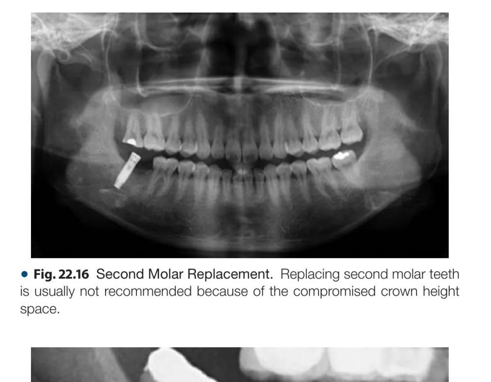
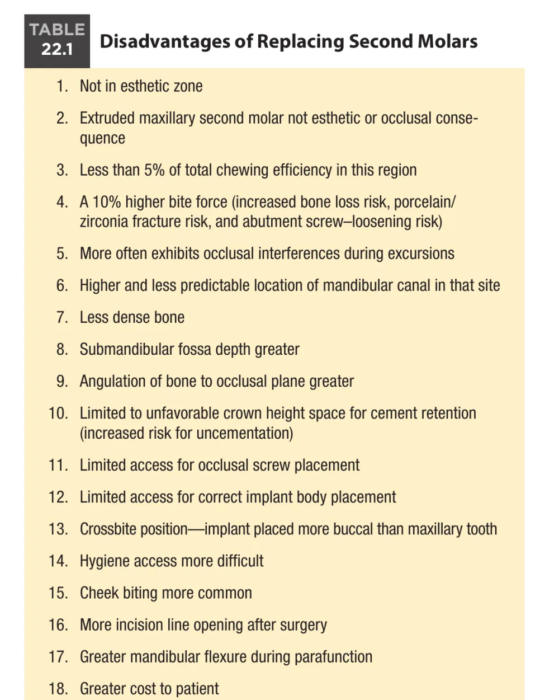

نسخه استخراجشده؛ ترجمه یا تأیید علمی انجام نشده است. وضعیت: captured
بحث با اصلی شروع میشود که تصمیم را توجیه میکند:
«مولرهای طبیعی دو برابر بار پرمولرها را دریافت میکنند و ۲۰۰ درصد سطح ریشهی بیشتری دارند؛ بنابراین منطقی است که پشتیبانی ایمپلنت در ناحیهی مولر باید بیشتر از موقعیت پرمولر باشد.»
دو برابر بار، و ۲۰۰ درصد سطح ریشهی بیشتر. و از یونیتهای پیش میدانی که این نقد به رویهی رایج بود — که ما در خلف ایمپلنت کوچکتر میگذاریم در حالی که طبیعت سطح را زیاد کرده.
و اکنون قواعد فضایی — سه بازه که باید حفظ کنی:
بازهی یکم — ۸ تا ۱۲ میلیمتر:
«وقتی بُعد مزیوـدیستالی دندان غایب ۸ تا ۱۲ میلیمتر با عرض باکولینگوالی بیش از ۷ میلیمتر باشد، یک بدنهی ایمپلنت با قطر ۵ تا ۶ میلیمتر پیشنهاد میشود.»
و این بازه طبیعی است: «بُعد مزیوـدیستالی معمولاً از ۸ تا ۱۲ میلیمتر متغیر است، بسته به اندازهی دندان اصلی و مقدار دریفت مزیالی مولر دوم پیش از جایگذاری ایمپلنت.»
و اکنون یک قاعدهی اندازهگیری که اگر آن را رعایت نکنی، همهی محاسباتت غلط میشود:
«باید توجه شود که اندازهی ایدهآل ایمپلنت باید با فاصلهی بیندندانی از CEJ مجاور هر دندان اندازهگیری شود، نه با فاصلهی اینترپروگزیمال در مارجینال ریجها.»
چرا این تفاوت مهم است؟ چون دندانهای مجاور در سطح مارجینال ریج به هم نزدیکترند تا در سطح CEJ. اگر در بالا اندازه بگیری، فضا را کمتر از واقع میسنجی — و ممکن است ایمپلنتی باریکتر از لازم انتخاب کنی، یا اصلاً از گزینهی دو ایمپلنت صرفنظر کنی.
و استخوان در سطح CEJ است، نه در سطح مارجینال ریج — پس همانجا هم باید اندازه بگیری.
و یک اقدام آمادهسازی توصیهشده:
«یک دندان مجاور تیلتشده باید به وضعیت ایدهآلتری بازکانتور شود، تا ایمپکشن غذا زیر تماسهای اینترپروگزیمال در فضای بزرگشدهی پاپیلای بیندندانی مثلثی — که پس از قرار دادن کراون ایمپلنت شکل میگیرد — رخ ندهد.»
یعنی دندان تیلتشده دو مشکل میسازد: فضا را کم میکند (که با ارتودنسی حل میشود) و یک فضای مثلثی میسازد که غذا در آن گیر میکند (که با بازکانتور کردن حل میشود). این دو راهحل متفاوتاند و هر دو ممکن است لازم باشند.
و یک نکته دربارهی خود مولر اول: «مولر اول یکی از شایعترین دندانهایی است که کشیده میشود.» — پس این جایگاه، پرتکرارترین تصمیم مولر در کار روزمرهی توست.
بازهی دوم — ۱۴ تا ۲۰ میلیمتر:
«وقتی بُعد مزیوـدیستالی جایگاه دندان غایب ۱۴ تا ۲۰ میلیمتر باشد، دو ایمپلنت با قطر ۴ تا ۵ میلیمتر باید برای ترمیم ناحیه در نظر گرفته شود.»
و سه دلیل برای ترجیح دو ایمپلنت:
۱. «وقتی دو ایمپلنت ناحیهی مولر را جایگزین میکنند، بارهای آفست مزیوـدیستالی به پروتز میتواند حذف شود، چون هر ایمپلنت میتواند ۱٫۵ میلیمتر از دندان مجاور قرار گیرد.»
۲. «سطح کل پشتیبانی برای دو ایمپلنت بیشتر است در مقایسه با سطحی که یک ایمپلنت با قطر بزرگتر فراهم میکند» — و این را میشود با یک نامساوی روشن نوشت: دو ایمپلنت ۴ میلیمتری بزرگتر از یک ایمپلنت ۵ یا ۶ میلیمتری.
۳. در مقایسهی یک ایمپلنت با دو ایمپلنت برای جایگزینی یک مولر، لقی پروتز و شل شدن پیچ شایعترین عارضهی گروه تکایمپلنتی بود (۴۸ درصد) و در گروه دوایمپلنتی به ۸ درصد رسید. نتیجهی عملی: «بنابراین، هرجا ممکن است، دو ایمپلنت باید برای جایگزینی فضای بزرگتر تکمولر به کار رود تا بارهای کانتیلور و شل شدن پیچ اباتمنت کاهش یابد.»
و فرمول محاسبهی قطر — که مستقیماً از قاعدهی فاصلهگذاری یونیت ۲٫۲ میآید:
«وقتی فضای خلفی ۱۴ تا ۲۰ میلیمتر است، بزرگترین قطر ایمپلنت برای دو ایمپلنت با کم کردن ۶ میلیمتر از فاصلهی بیندندانی و تقسیم بر ۲ محاسبه میشود.»
و آن ۶ میلیمتر از کجا میآید؟ «۱٫۵ میلیمتر از هر دندان برای بافت نرم و خطر جراحی، و ۳ میلیمتر میان ایمپلنتها.»
یک مثال: ۱۶ میلیمتر منهای ۶ میلیمتر برابر ۱۰، تقسیم بر ۲ برابر ایمپلنتهای ۵ میلیمتری.
و چرا ۳ میلیمتر میان دو ایمپلنت؟ دلیلش زیستی است: «بهطور ایدهآل دو ایمپلنت باید ۳ میلیمتر فاصله داشته باشند، چون تحلیل استخوان کرستال اطراف هر ایمپلنت ممکن است رخ دهد. عرض نقص کرستال معمولاً کمتر از ۱٫۵ میلیمتر است.»
حالا حساب را ببین: ۱٫۵ میلیمتر نقص از هر سو، جمعاً ۳ میلیمتر. پس فاصلهی ۳ میلیمتر نمیگذارد نقص زاویهدار کنار هر ایمپلنت به یک نقص افقی میان دو ایمپلنت تبدیل شود — نقصی که عمق سولکوس را زیاد، ارتفاع پاپیلا را کم و گیر غذا را بیشتر میکند. همان چیزی که در یونیت ۲٫۲ گفتیم و اینجا عددش را میبینی.
و بازهی سوم — ۱۲ تا ۱۴ میلیمتر، که صادقانه باید گفت دشوار است:
«وقتی فضای مزیوـدیستالی ۱۲ تا ۱۴ میلیمتر از CEJهای مجاور است، طرح درمان انتخابی کمتر آشکار است.»
و دو راه، هر دو با مشکل:
• یک ایمپلنت ۵ میلیمتری: «ممکن است به کانتیلورهایی تا ۵ میلیمتر روی هر مارجینال ریج کراون بینجامد.»
• دو ایمپلنت: «خطر جراحی، پروتزی و بهداشتی بیشتری دارند.»
و راهحل، که هوشمندانه است:
«هدف اصلی این است که دستکم ۱۴ میلیمتر فضا بهجای ۱۲ تا ۱۴ میلیمتر به دست آید.»
و ابزارش: «ارتودنسی ممکن است درمان انتخابی برای راست کردن یک مولر دوم تیلتشده یا افزایش فضای بیندندانی باشد.»
یعنی بهجای انتخاب میان دو گزینهی بد، فضا را عوض کن. این همان الگویی است که در راهبرد مولر شیری هم دیدی — گاهی بهترین حرکت، تغییر دادن مسئله است نه حل کردنش.
و یک قاعده برای دو مولر مجاور غایب:
«وقتی دو مولر مجاور غایباند، سودمند است که هر ایمپلنت ۱٫۵ تا ۲ میلیمتر از دندانهای مجاور قرار گیرد (یا زیر مزیال مولر اول و دیستال مولر دوم) و ایمپلنتها به هم اسپلینت شوند، بهجای اینکه ایمپلنت در مرکز هر دندان قرار گیرد.»
به این نکته دقت کن — موقعیتیابی نه بر پایهی مرکز دندانهای ازدسترفته، بلکه بر پایهی پخش کردن تکیهگاهها تا حد ممکن، تا کانتیلور مزیال و دیستال حذف شود. و این همان اصل «تکیهگاه انتهایی» از یونیت ۲٫۲ است.

برای احتیاط در جایگزینی مولر دوم هجده دلیل هست. مهمترینشان:
دلایل عملکردی:
• «کمتر از ۵ درصد کل کارایی جویدن در این ناحیه است.»
• «۱۰ درصد نیروی گاز بالاتر» — با خطر افزایشیافتهی تحلیل استخوان، شکست پرسلن/زیرکونیا، و شل شدن پیچ اباتمنت.
این دو را کنار هم بگذار و معادله را ببین: کمتر از ۵ درصد سود عملکردی، در برابر ۱۰ درصد نیروی بیشتر. نسبت سود به خطر، ناخوشایند است.
• «بیشتر اوقات تداخلهای اکلوزالی حین اکسکورسیون نشان میدهد.»
دلایل آناتومیک:
• «محل بالاتر و کمتر قابل پیشبینی کانال مندیبولار در آن جایگاه.»
• «استخوان کمتراکمتر»، «عمق بیشتر فوسای زیرفکی»، «زاویهی بیشتر استخوان نسبت به صفحهی اکلوزال.»
دلایل پروتزی:
• «فضای ارتفاع تاج نامساعد و محدود برای گیر سمانی — با خطر افزایشیافتهی خارج شدن از سمان.»
• «دسترسی محدود برای قرار دادن پیچ اکلوزال»، «دسترسی محدود برای جایگذاری درست بدنهی ایمپلنت.»
• «موقعیت کراسبایت — ایمپلنت باکالیتر از دندان ماگزیلا قرار میگیرد.»
دلایل مراقبتی و بیمار:
• «دسترسی بهداشتی دشوارتر»، «گاز گرفتن گونه شایعتر»، «باز شدن بیشتر خط برش پس از جراحی»
• «فلکسچر بیشتر مندیبل حین پارافانکشن»، «هزینهی بیشتر برای بیمار.»
و یک خطر آناتومیک که باید جداگانه و با تأکید گفت:
«شریان فاسیال در فوسای زیرفکی قرار دارد پیش از آنکه از ناچ مندیبولار عبور کند و روی صورت برود. سوراخ شدن صفحهی لینگوال در ناحیهی مولر دوم ممکن است شریان فاسیال را آسیب بزند و خونریزی تهدیدکنندهی حیات ایجاد کند.»
«تهدیدکنندهی حیات» — این عبارت در کل مسیر بهندرت به کار رفته است. و دو عیبِ فوسای زیرفکی عمیقتر و زاویهی بیشتر استخوان نسبت به صفحهی اکلوزال، دقیقاً همان چیزی است که این سوراخ شدن را محتملتر میکند.
و یک هشدار دربارهی پارافانکشن: «مندیبل در این ناحیه فلکسچر و تورشن افزایشیافتهای حین باز کردن یا گاز گرفتن سنگین یکطرفه نشان میدهد و دینامیک جویدن کمتر مساعد است. در نتیجه ایمپلنت ممکن است در بیمار با براکسیسم یا کلنچینگ متوسط تا شدید اینتگره نشود.»
به فعل «اینتگره نشود» دقت کن — نه «بعداً شکست بخورد». یعنی خطر در همان فاز التیام و اینتگریشن است.
و اکنون قاعدهای که همهی اینها را به یک تصمیم تبدیل میکند — و نامتقارن است:
برای مولر دوم ماگزیلا: «بهعنوان یک قاعدهی کلی، مولرهای دوم ماگزیلا معمولاً با ایمپلنت جایگزین میشوند وقتی در برابر یک دندان طبیعی قرار دارند.»
و دلیلش اکلوزالی است: «یک مولر دوم ماگزیلای غایب که در برابر مولر دوم مندیبل با اکستروژن قرار دارد، ممکن است هنگام حرکت مندیبل به اکسکورسیون نگرانی اکلوزالی ایجاد کند. اکستروژن مولر دوم مندیبل به یک تداخل اکلوزالی میانجامد وقتی مندیبل به اکسکورسیون پروتروسیو یا جانبی میرود.»
برای مولر دوم مندیبل: «مولر دوم مندیبل معمولاً وقتی جایگزین میشود که مولر سوم در عملکرد باشد و باقی بماند.»
و در غیر این صورت: «مولر دوم مندیبل معمولاً جایگزین نمیشود وقتی مولر سوم و مولر دوم تنها دندانهای خلفی غایب مندیبل باشند.»
حالا چرا این عدم تقارن؟ پاسخ زیباست:
«اکستروژن مولر دوم ماگزیلا معمولاً یک نگرانی زیبایی یا اکلوزالی نیست. وقتی مندیبل به اکسکورسیون میرود، مولر دوم ماگزیلا پشت مولر اول مندیبل است و مسیر حرکت مندیبل را تغییر نمیدهد، حتی اگر مولر دوم ماگزیلا اکسترود شود.»
یعنی هندسهی قوس، دو سمت را متفاوت میکند. دندان ماگزیلای اکسترودشده بیآزار است؛ دندان مندیبل اکسترودشده تداخل میسازد.
و اگر اکستروژن ماگزیلا نگرانکننده شد، دو راه ساده هست: «کراون روی مولر اول مندیبل ممکن است یک تماس اکلوزال با مارجینال ریج مزیال مولر دوم ماگزیلا داشته باشد، یا مولر دوم ماگزیلا ممکن است به مولر اول ماگزیلا باند شود.»
هر دو راهحل، بسیار کمتهاجمتر از یک ایمپلنت مولر دوماند.
و استثنای نهایی: «اگر استخوان فراوان باشد و هیچ پارستزی یا خطر جراحی آشکار نباشد، مولر دوم ممکن است جایگزین شود. با این حال، این معمولاً استثنا است نه قاعدهی درمان، و معمولاً تنها یک دندان به اندازهی پرمولر جایگزین میکند.»
به قید پایانی دقت کن — حتی وقتی مولر دوم را جایگزین میکنی، کراون را به اندازهی یک پرمولر بساز، نه یک مولر. این هم میز اکلوزال را باریک میکند و هم دسترسی بهداشتی را بهتر — دو اصلی که از IPO میشناسی.
